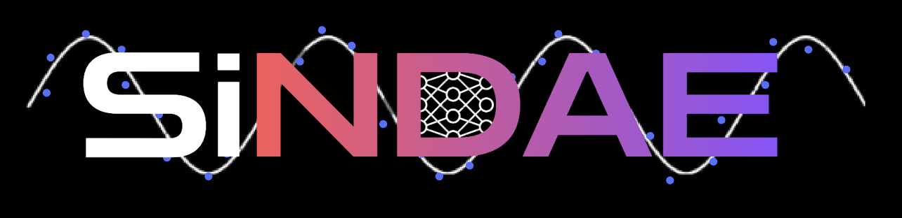

<title>Phase Portrait Draft</title>
<meta name="claude:viewport-fit-sides" content="cover">
<link rel="stylesheet" href="https://fonts.googleapis.com/css2?family=Schibsted+Grotesk:wght@400;500;700&family=STIX+Two+Text:ital@1&display=swap">
<style>
/* Layout: one pen-plotter sheet of cobalt card. The opening is a live phase portrait whose six
   fixed points are the projects; every figure after it is white ink drawn straight on the ground. */
:root{
  color-scheme:dark;
  --blue:#1838C8; --deep:#0E2391; --ink:#F5F2E8; --ink2:#C5CEF8; --coral:#FF8E78; --hair:rgba(245,242,232,.28);
  --text:"Schibsted Grotesk",system-ui,sans-serif; --math:"STIX Two Text","Times New Roman",serif;
}
*{box-sizing:border-box}
html{scroll-behavior:smooth;scrollbar-color:var(--ink2) var(--deep)}
body{background:var(--blue);color:var(--ink);font:400 1.0625rem/1.55 var(--text);margin:0}
::selection{background:var(--coral);color:var(--deep)}
a{color:inherit;text-underline-offset:.22em;text-decoration-thickness:1px}
a:hover{color:var(--coral)}
:focus-visible{outline:2px solid var(--coral);outline-offset:3px}
.wrap{max-width:1240px;margin-inline:auto;padding-left:max(16px,env(safe-area-inset-left,0px));padding-right:max(16px,env(safe-area-inset-right,0px))}
@media(min-width:820px){.wrap{padding-left:max(44px,env(safe-area-inset-left,0px));padding-right:max(44px,env(safe-area-inset-right,0px))}}

/* hero */
.hero{position:relative;height:min(88vh,800px);min-height:600px;overflow:hidden;border-bottom:1px solid var(--hair)}
.hero canvas{position:absolute;inset:0;width:100%;height:100%;cursor:crosshair}
.hero nav{position:absolute;top:0;right:0;display:flex;gap:1.5rem;padding:1.1rem max(16px,env(safe-area-inset-right,0px)) .6rem 1rem;font-weight:500;font-size:.95rem;background:var(--blue);z-index:2}
@media(min-width:820px){.hero nav{padding-right:max(44px,env(safe-area-inset-right,0px))}}
.hero nav a{text-decoration:none}
.who{position:absolute;left:max(16px,env(safe-area-inset-left,0px));bottom:clamp(1.2rem,4vw,2.6rem);width:min(84vw,540px);z-index:1}
@media(min-width:820px){.who{left:max(44px,env(safe-area-inset-left,0px))}}
.who h1{margin:0 0 1.1rem;font-size:0;line-height:0}
.who svg{display:block;width:100%;height:auto;overflow:visible}
.who svg path{fill:none;stroke:var(--ink);stroke-width:.46;stroke-linecap:round;stroke-linejoin:round;stroke-dasharray:1;stroke-dashoffset:0}
.who p{margin:0;font-size:1.15rem;line-height:1.4;font-weight:500;max-width:34ch}
.who .hint{font-size:.9rem;font-weight:400;color:var(--ink2);margin-top:.5rem}
.who button{font:inherit;color:var(--ink);background:none;border:0;border-bottom:1px solid;padding:0;cursor:pointer}
@media(prefers-reduced-motion:no-preference){
  .who svg path{animation:plot .7s cubic-bezier(.3,.7,.2,1) both;animation-delay:calc(var(--i)*90ms + 300ms)}
  @keyframes plot{from{stroke-dashoffset:1}to{stroke-dashoffset:0}}
}
.fp{position:absolute;transform:translate(14px,-50%);z-index:1;text-decoration:none;background:var(--blue);padding:.18rem .45rem .22rem;font-weight:700;font-size:.92rem;line-height:1.15;white-space:nowrap}
.fp.l{transform:translate(calc(-100% - 14px),-50%);text-align:right}
.fp i{display:block;font:italic .82rem/1.1 var(--math);color:var(--ink2);font-weight:400}
.fp:hover{color:var(--coral)}

/* projects */
.proj{display:grid;gap:1.6rem 3.5rem;padding-block:clamp(3rem,7vw,6rem);border-bottom:1px solid var(--hair);align-items:center}
@media(min-width:900px){.proj{grid-template-columns:repeat(12,minmax(0,1fr))}
  .proj>.fig{grid-column:1/8}.proj>.label{grid-column:8/13}
  .proj.flip>.fig{grid-column:6/13;grid-row:1}.proj.flip>.label{grid-column:1/6;grid-row:1}}
.fig{min-width:0}
.fig svg{display:block;width:100%;height:auto}
.scroll{overflow-x:auto}.scroll>svg{min-width:600px}
.label{min-width:0}
.label h2{font:500 clamp(1.9rem,3.6vw,2.9rem)/1.04 var(--text);letter-spacing:-.02em;margin:0 0 .5rem;text-wrap:balance}
.where{color:var(--ink2);margin:0 0 1rem;font-size:.95rem}
.line{margin:0 0 1.4rem;max-width:44ch}
.run{list-style:none;margin:0;padding:0;display:grid;grid-template-columns:repeat(2,minmax(0,1fr));gap:.9rem 1.5rem}
.run li{display:flex;flex-direction:column;border-top:1px solid var(--hair);padding-top:.5rem}
.run b{font:500 1.6rem/1.05 var(--text);letter-spacing:-.02em;font-variant-numeric:tabular-nums;white-space:nowrap}
.run span{font-size:.85rem;line-height:1.3;color:var(--ink2);margin-top:.15rem}
.meta{display:flex;flex-wrap:wrap;gap:.4rem 1.2rem;margin:1.2rem 0 0;font-size:.92rem}
.note{color:var(--coral)}
.figbar{display:flex;flex-wrap:wrap;gap:.6rem 1.2rem;align-items:center;justify-content:space-between;margin-top:.9rem;min-height:2.6rem}
.figbar p{margin:0;flex:1 1 16rem;min-width:0}
.fine{margin:.5rem 0 0;font-size:.85rem;color:var(--ink2)}
[data-netsteps]{display:flex;gap:8px}
[data-netsteps] button{width:22px;height:22px;padding:0;border:0;background:none;cursor:pointer;position:relative}
[data-netsteps] button::before{content:"";position:absolute;inset:7px;border-radius:50%;border:1.5px solid var(--ink);transition:inset .2s,background .2s,border-color .2s}
[data-netsteps] button[aria-current="step"]::before{inset:4px;background:var(--coral);border-color:var(--coral)}
[data-rectabs]{display:flex;flex-wrap:wrap;gap:.3rem 1.4rem;margin-bottom:1rem}
[data-rectabs] button{font:500 .95rem/1 var(--text);padding:.45rem 0;border:0;border-bottom:1.5px solid transparent;background:none;color:var(--ink2);cursor:pointer}
[data-rectabs] button:hover{color:var(--ink)}
[data-rectabs] button[aria-pressed="true"]{color:var(--coral);border-color:var(--coral)}
.flowbox{position:relative;aspect-ratio:16/10;max-width:100%}
.flowbox canvas{position:absolute;inset:0;width:100%;height:100%}
.flowbox img{position:absolute;right:0;top:0;width:min(48%,340px);height:auto;outline:8px solid var(--blue)}
.flowbox .ax{position:absolute;font:italic 1rem/1 var(--math);color:var(--ink2);background:var(--blue);padding:.1rem .35rem}
.eq{font:italic 1rem/1.5 var(--math);color:var(--ink)}
.eq span{font:400 .85rem/1.4 var(--text);color:var(--ink2)}
.shot{display:block;width:100%;height:auto;border:1px solid var(--hair)}
.pair{display:grid;gap:3rem 3.5rem;padding-block:clamp(3rem,7vw,6rem);border-bottom:1px solid var(--hair)}
@media(min-width:900px){.pair{grid-template-columns:1fr 1fr}}
.pair .fig{margin-bottom:1.4rem}
.pair .label h2{font-size:clamp(1.6rem,2.8vw,2.2rem)}

/* skills */
.skills{padding-block:clamp(3rem,7vw,6rem)}
.skills h2,.end h2{font:500 clamp(2.4rem,6vw,4.2rem)/1 var(--text);letter-spacing:-.03em;margin:0 0 1.4rem}
.poles{position:relative;height:clamp(320px,46vw,460px);border-block:1px solid var(--hair);margin-bottom:1.4rem}
.poles canvas{position:absolute;inset:0;width:100%;height:100%}
.poles button{position:absolute;transform:translate(-50%,-50%);font:700 .92rem/1.1 var(--text);color:var(--ink);background:var(--blue);border:1.5px solid var(--ink);padding:.4rem .6rem;cursor:pointer;white-space:nowrap;transition:background .2s,color .2s,border-color .2s,opacity .2s}
.poles button.on{background:var(--coral);border-color:var(--coral);color:var(--deep)}
.poles button.off{opacity:.45}
.chips{display:grid;gap:1.2rem 3rem}
@media(min-width:820px){.chips{grid-template-columns:1fr 1fr}}
.chips h3{font:400 .9rem/1 var(--text);color:var(--ink2);margin:0 0 .6rem}
.chips div{display:flex;flex-wrap:wrap;gap:.2rem 1.1rem}
.chips button{font:500 1.05rem/1.2 var(--text);padding:.3rem 0;border:0;border-bottom:1.5px solid transparent;background:none;color:var(--ink);cursor:pointer;transition:color .2s,opacity .2s}
.chips button sup{font-size:.7em;color:var(--ink2);margin-left:.15em}
.chips button.on{color:var(--coral);border-color:var(--coral)}
.chips button.off{opacity:.42}

.end{background:var(--coral);color:var(--deep);padding-block:clamp(3rem,8vw,6rem)}
.end ::selection{background:var(--deep);color:var(--coral)}
.end .mail{font:500 clamp(1.5rem,4.6vw,3rem)/1.1 var(--text);letter-spacing:-.02em;overflow-wrap:anywhere;margin:0 0 1.2rem;user-select:all}
.end .row{display:flex;flex-wrap:wrap;gap:.8rem 1.6rem;align-items:center;font-weight:500}
.end a:hover{color:#fff}
.end button{font:inherit;color:var(--coral);background:var(--deep);border:0;padding:.7rem 1rem;cursor:pointer}
.end button:hover{background:#000}
.end :focus-visible{outline-color:var(--deep)}
@media(prefers-reduced-motion:reduce){html{scroll-behavior:auto}*{transition:none!important}}
</style>

<header class="hero" id="top">
  <canvas id="field" role="img" aria-label="A phase portrait. Streamlines flow between six fixed points, one for each project."></canvas>
  <nav aria-label="Sections"><a href="#thesis">Work</a><a href="#skills">Skills</a><a href="#contact">Contact</a></nav>
  <div id="fps"></div>
  <div class="who" id="who">
    <h1><svg id="name" role="img" aria-label="Nicolas Smits"></svg></h1>
    <p>Optimisation, machine learning and reinforcement learning for process systems.</p>
    <p class="hint">Click the field to drop a vortex. <button type="button" id="reset" hidden>Reset</button></p>
  </div>
</header>

<main class="wrap">
  <section class="proj" id="thesis">
    <div class="fig" id="netfig">
      <svg data-net></svg>
      <div class="figbar"><p data-netcap></p><div data-netsteps></div></div>
      <p class="fine">Illustrative episode on a 9-node network. The trained policy designs held-out networks of up to 70 nodes.</p>
    </div>
    <div class="label" data-label="thesis"></div>
  </section>

  <section class="proj flip" id="sindae">
    <div class="fig">
      <div class="flowbox">
        <canvas id="lg" role="img" aria-label="Phase portrait of the Leslie-Gower predator-prey system: every trajectory spirals into one equilibrium"></canvas>
        
        <span class="ax" style="left:0;bottom:0">prey x&#8320;</span><span class="ax" style="left:0;top:0">predator x&#8321;</span>
      </div>
      <p class="fine eq">x&#8320;&#8242; = x&#8320;(r&#8321; &minus; a&#8321;x&#8321; &minus; b&#8321;x&#8320;) &nbsp;&nbsp; x&#8321;&#8242; = x&#8321; &middot; NN(x&#8320;, x&#8321;) &nbsp; <span>The network learns the second bracket; the first stays a hard constraint.</span></p>
    </div>
    <div class="label" data-label="sindae"></div>
  </section>

  <section class="proj" id="recsys">
    <div class="fig" id="recfig">
      <div data-rectabs role="group" aria-label="Request scenario"></div>
      <div class="scroll"><svg data-rec></svg></div>
      <div class="figbar"><p data-reccap></p></div>
    </div>
    <div class="label" data-label="recsys"></div>
  </section>

  <section class="proj flip" id="wayfinder">
    <div class="fig"></div>
    <div class="label" data-label="wayfinder"></div>
  </section>

  <div class="pair">
    <section id="fifa"><div class="fig"><svg id="fifaS"></svg></div><div class="label" data-label="fifa"></div></section>
    <section id="sepsis"><div class="fig"><svg id="sepsisS"></svg></div><div class="label" data-label="sepsis"></div></section>
  </div>

  <section class="skills" id="skills">
    <h2>Skills</h2>
    <div class="poles" id="poles"><canvas role="img" aria-label="A grid of poles that turn toward the projects using the selected skill"></canvas></div>
    <div class="chips"><div><h3>Methods</h3><div id="chM"></div></div><div><h3>Tools</h3><div id="chT"></div></div></div>
  </section>
</main>

<footer class="end" id="contact">
  <div class="wrap">
    <h2>Contact</h2>
    <p class="mail">nsmits@andrew.cmu.edu</p>
    <div class="row"><button type="button" data-copy="nsmits@andrew.cmu.edu">Copy address</button><a href="https://github.com/nicksmits1" target="_blank" rel="noopener">GitHub</a><a href="https://linkedin.com/in/nicolas-smits" target="_blank" rel="noopener">LinkedIn</a></div>
  </div>
</footer>

<script src="shared/core.js"></script>
<script>
(function () {
  const css = n => getComputedStyle(document.documentElement).getPropertyValue(n).trim();
  const INK = css('--ink'), INK2 = css('--ink2'), CORAL = css('--coral'), BLUE = css('--blue'), DEEP = css('--deep');
  const font = '"Schibsted Grotesk",system-ui,sans-serif', el = NS.el;
  NS.labels();

  /* ---- the name, drawn as single pen strokes ---- */
  const G = { N: ['M0 6 L0 0 L4 6 L4 0', 4], I: ['M0 0 L0 6', 0], C: ['M3.6 1.1 A2 3 0 1 0 3.6 4.9', 4], O: ['M2 0 A2 3 0 1 0 2 6 A2 3 0 1 0 2 0', 4],
    L: ['M0 0 L0 6 L3.4 6', 3.4], A: ['M0 6 L2 0 L4 6 M0.8 3.9 L3.2 3.9', 4], S: ['M3.6 1 A1.8 1.5 0 1 0 2 3 A1.8 1.5 0 1 1 0.4 5', 4], M: ['M0 6 L0 0 L2.5 4.2 L5 0 L5 6', 5], T: ['M0 0 L4 0 M2 0 L2 6', 4] };
  const name = document.getElementById('name'); name.setAttribute('viewBox', '-0.4 -0.4 34 14.6');
  let k = 0;
  ['NICOLAS', 'SMITS'].forEach((word, row) => { let x = 0; [...word].forEach(ch => { const [d, w] = G[ch];
    const p = el('path', { d, transform: `translate(${x} ${row * 7.8})`, pathLength: 1 }, name); p.style.setProperty('--i', k++); x += w + 1.5; }); });

  /* ---- the field ---- */
  const cps = [
    { id: 'sepsis', w: [0.13, 0.2], n: [0.24, 0.13], m: [-0.5, -0.866, 0.866, -0.5], t: 'spiral sink' },
    { id: 'sindae', w: [0.4, 0.27], n: [0.72, 0.2], m: [0, 1, -1, 0], t: 'centre' },
    { id: 'thesis', w: [0.68, 0.2], n: [0.28, 0.33], m: [-0.5, 0.866, -0.866, -0.5], t: 'spiral sink' },
    { id: 'fifa', w: [0.9, 0.44], n: [0.76, 0.43], m: [1, 0, 0, 1], t: 'source' },
    { id: 'recsys', w: [0.61, 0.58], n: [0.26, 0.54], m: [-1, 0, 0, -1], t: 'sink' },
    { id: 'wayfinder', w: [0.84, 0.82], n: [0.7, 0.63], m: [0.643, 0.766, 0.766, -0.643], t: 'saddle' },
  ];
  const hero = document.getElementById('top'), who = document.getElementById('who'), fps = document.getElementById('fps'), reset = document.getElementById('reset');
  cps.forEach(c => { const a = document.createElement('a'); a.className = 'fp'; a.href = '#' + c.id; a.innerHTML = `${NS.byId[c.id].short}<i>${c.t}</i>`; fps.appendChild(a); c.a = a; });
  let extra = [], pts = [];
  const field = NS.flow(document.getElementById('field'), { color: INK, lw: 1, dsep: 13, alpha: 0.86, draw: 3200,
    field(W, H) {
      const narrow = W < 700, hr = hero.getBoundingClientRect(), r = who.getBoundingClientRect();
      const nb = { l: r.left - hr.left - 14, r: r.right - hr.left + 18, t: r.top - hr.top - 20, b: H };
      pts = cps.map(c => { const q = narrow ? c.n : c.w; c.a.style.left = q[0] * 100 + '%'; c.a.style.top = q[1] * 100 + '%'; c.a.classList.toggle('l', q[0] > 0.6); return { x: q[0] * W, y: q[1] * H, m: c.m, main: true }; })
        .concat(extra.map(e => ({ x: e[0] * W, y: e[1] * H, m: e[2] })));
      const sig = Math.min(W, H) * 0.3;
      return {
        f(x, y) { let u = 0.1, v = 0.03; for (const p of pts) { const dx = x - p.x, dy = y - p.y, d = Math.hypot(dx, dy) + 1e-3, w = 1 / (1 + (d / sig) ** 2) / d; u += w * (p.m[0] * dx + p.m[1] * dy); v += w * (p.m[2] * dx + p.m[3] * dy); } return [u, v]; },
        mask(x, y) { if (x > nb.l && x < nb.r && y > nb.t && y < nb.b) return true; if (y < 52 && x > W - 300) return true; for (const p of pts) if ((x - p.x) ** 2 + (y - p.y) ** 2 < 90) return true; return false; },
        seeds: pts.map(p => [p.x + 34, p.y + 14]).concat([[W * 0.5, H * 0.45], [W * 0.08, H * 0.08], [W * 0.95, H * 0.95], [W * 0.3, H * 0.5]]),
      };
    },
    after(ctx) { pts.forEach(p => { ctx.beginPath(); ctx.arc(p.x, p.y, p.main ? 6 : 4, 0, 7); ctx.fillStyle = p.main ? CORAL : INK; ctx.fill(); }); } });
  let flip = 1;
  document.getElementById('field').addEventListener('click', e => { const r = e.currentTarget.getBoundingClientRect();
    extra.push([(e.clientX - r.left) / r.width, (e.clientY - r.top) / r.height, [0, flip, -flip, 0]]); flip = -flip; if (extra.length > 3) extra.shift(); reset.hidden = false; field.rebuild(); });
  reset.addEventListener('click', () => { extra = []; reset.hidden = true; field.rebuild(); });

  /* ---- figures ---- */
  const theme = { ink: INK, dim: INK2, fill: BLUE, fresh: CORAL, bad: CORAL, pulse: CORAL, hi: CORAL, font };
  NS.netFigure(document.getElementById('netfig'), Object.assign({}, theme, { dim: '#8FA0EE' }));
  NS.recFigure(document.getElementById('recfig'), Object.assign({}, theme, { fill: DEEP, radius: 23 }));
  NS.scale(document.getElementById('fifaS'), NS.fifa, theme);
  NS.scale(document.getElementById('sepsisS'), NS.sepsis, Object.assign({ ticks: 6 }, theme));
  let eq = null;
  NS.flow(document.getElementById('lg'), { color: INK, lw: 1, dsep: 11, alpha: 0.9,
    field(w, h) { const f = NS.leslieGower(w, h, 0); eq = f.eq; return f; },
    after(ctx) { if (!eq) return; ctx.fillStyle = CORAL; ctx.beginPath(); ctx.arc(eq[0], eq[1], 6, 0, 7); ctx.fill(); } });

  /* ---- skills: flow poles ---- */
  const box = document.getElementById('poles'), cv = box.querySelector('canvas'), ctx = cv.getContext('2d');
  const anchors = { thesis: [0.2, 0.3], sindae: [0.5, 0.2], recsys: [0.8, 0.3], sepsis: [0.2, 0.74], wayfinder: [0.5, 0.8], fifa: [0.8, 0.74] };
  const pb = {}; NS.projects.forEach(p => { const b = document.createElement('button'); b.type = 'button'; b.textContent = p.short; b.style.left = anchors[p.id][0] * 100 + '%'; b.style.top = anchors[p.id][1] * 100 + '%'; box.appendChild(b); pb[p.id] = b; b.addEventListener('click', () => pick('p', p.id)); });
  const chips = [];
  [['chM', NS.methods, 'methods'], ['chT', NS.tools, 'tools']].forEach(([id, list, key]) => list.forEach(s => { const b = document.createElement('button'); b.type = 'button'; b.innerHTML = `${s}<sup>${NS.count(s)}</sup>`; b.setAttribute('aria-label', `${s}, ${NS.count(s)} project${NS.count(s) > 1 ? 's' : ''}`);
    document.getElementById(id).appendChild(b); chips.push({ b, s, key }); b.addEventListener('click', () => pick('s', s)); b.addEventListener('pointerenter', () => pick('s', s, true)); }));
  let active = new Set(NS.projects.map(p => p.id)), sel = null, P = [], W = 0, H = 0, raf = 0;
  function pick(kind, v, hover) {
    const key = kind + v; if (!hover && sel === key) { sel = null; active = new Set(NS.projects.map(p => p.id)); } else { sel = key;
      active = new Set(kind === 'p' ? [v] : NS.projects.filter(p => p.methods.includes(v) || p.tools.includes(v)).map(p => p.id)); }
    const used = kind === 'p' && sel ? new Set(NS.byId[v].methods.concat(NS.byId[v].tools)) : null;
    NS.projects.forEach(p => { pb[p.id].classList.toggle('on', !!sel && active.has(p.id)); pb[p.id].classList.toggle('off', !!sel && !active.has(p.id)); });
    chips.forEach(c => { const on = sel && (kind === 's' ? c.s === v : used.has(c.s)); c.b.classList.toggle('on', !!on); c.b.classList.toggle('off', !!sel && !on); c.b.setAttribute('aria-pressed', on ? 'true' : 'false'); });
    aim(); cancelAnimationFrame(raf); raf = requestAnimationFrame(step);
  }
  function size() { const r = cv.getBoundingClientRect(), d = Math.min(devicePixelRatio || 1, 2); W = r.width; H = r.height; cv.width = W * d; cv.height = H * d; ctx.setTransform(d, 0, 0, d, 0, 0);
    P = []; const g = W < 600 ? 24 : 30; for (let y = g / 2; y < H; y += g) for (let x = g / 2 + ((Math.round(y / g) % 2) * g) / 2; x < W; x += g) P.push({ x, y, a: 0, ta: 0, s: 0.3, ts: 0.3 }); aim(true); draw(); }
  function aim(snap) { const A = [...active].map(id => [anchors[id][0] * W, anchors[id][1] * H]);
    P.forEach(p => { let u = 0, v = 0, near = 1e9; A.forEach(([ax, ay]) => { const dx = ax - p.x, dy = ay - p.y, d2 = dx * dx + dy * dy + 80; u += dx / d2; v += dy / d2; near = Math.min(near, Math.sqrt(d2)); });
      p.ta = Math.atan2(v, u); p.ts = Math.max(0.22, Math.min(1, 150 / near)); if (snap || NS.reduce) { p.a = p.ta; p.s = p.ts; } }); }
  function draw() { ctx.clearRect(0, 0, W, H); ctx.lineCap = 'round';
    P.forEach(p => { const L = 5 + 8 * p.s, c = Math.cos(p.a), s = Math.sin(p.a); ctx.globalAlpha = 0.35 + 0.65 * p.s; ctx.strokeStyle = INK; ctx.lineWidth = 1.1;
      ctx.beginPath(); ctx.moveTo(p.x - c * L, p.y - s * L); ctx.lineTo(p.x + c * L, p.y + s * L); ctx.stroke();
      ctx.fillStyle = sel ? CORAL : INK; ctx.beginPath(); ctx.arc(p.x + c * L, p.y + s * L, 1.9, 0, 7); ctx.fill(); }); ctx.globalAlpha = 1; }
  function step() { let moving = false; P.forEach(p => { let d = p.ta - p.a; d = Math.atan2(Math.sin(d), Math.cos(d)); if (Math.abs(d) > 0.004 || Math.abs(p.ts - p.s) > 0.004) moving = true; p.a += d * 0.14; p.s += (p.ts - p.s) * 0.14; }); draw(); if (moving) raf = requestAnimationFrame(step); }
  let lw = 0; new ResizeObserver(() => { const w = Math.round(cv.getBoundingClientRect().width); if (w !== lw) { lw = w; size(); } }).observe(cv);
})();
</script>
